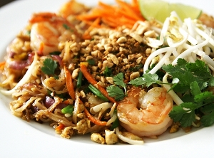

PAD THAI RECIPE

| Prep Time |
15 Minutes |
| Cook Time |
15 Minutes |
| Total Time |
30 Minutes |
| Servings |
4 |
INGREDIENTS
For Cooking:
- 1 tbsp soy sauce
- 1 tbsp water
- 1 tbsp creamy peanut butter
- 1 tsp Asian chili paste
- 3 tbsp canola oil
- 1 tsp minced garlic
- 1 tsp minced ginger
- 1/2 C julienned mixed vegetables (carrots, yellow squash, zucchini)
- 4 oz boneless, skinless chicken breast, sliced into strips
- 12 medium to large shrimp, peeled and deveined
- 1/4 lb medium-wide rice noodles, soaked in warm water until softened, and drained
- 1 tbsp packed light brown sugar
- 1 tbsp cider vinegar
For Garnish
- Chopped Romaine lettuce
- Mung bean sprouts
- Lime wedges
- Fresh cilantro leaves
- Chopped peanuts
DIRECTIONS
- In a small bowl, whisk together the soy sauce, water, peanut butter, and chili paste until smooth.
- Cook the veggies and meat:
- Heat a large wok over medium-high heat, and add canola oil
- When the oil is hot, add the garlic and ginger and let cook until fragrant, about 1 minute.
- Add the vegetables, chicken, and shrimp, and stir-fry until chicken and shrimp are browned and cooked through, about 2 minutes.
- Add noodles & sauce:
- Add noodles and loss to coat.
- Add peanut/spice paste, brown sugar and cider vinegar and toss to distribute. Cook until heated through, about 2 minutes.
- Serve:
- Spread chopped romaine on a platter.
- Serve Pad Thai on top of lettuce and garnish with mung bean sprouts, lime, cilantro and chopped peanuts.
USER COMMENTS
OTHER PAD THAI RECIPES
» Allrecipes
» Epicurious
» Betty Crocker

This might not be a traditional or authentic pad thai recipe, but it's simple, flavorful, and very delicious!
- Alfred Appetite